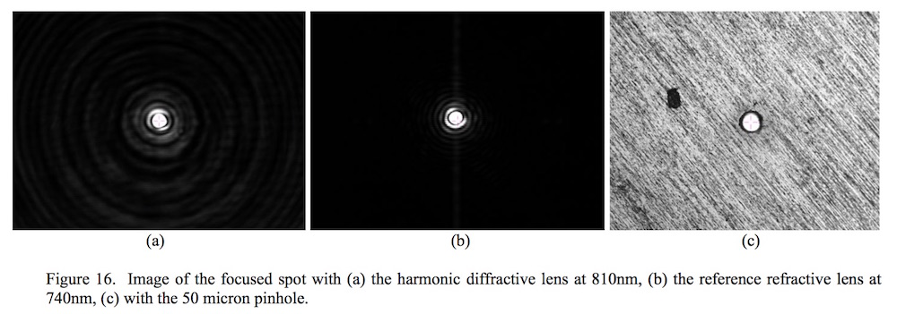

Practical implementation of broadband diffractive optical elements

In this paper we discuss the practical modeling, design, and testing of a hybrid diffractive optical system. My contribution to this project was proposing the idea and helping with the implementation. You can read more in the paper. You can also read the public Sandia National Laboratories SAND report
Citation: Junoh Choi; Alvaro A. Cruz-Cabrera; Anthony Tanbakuchi, "Practical implementation of broadband diffractive optical elements", Proc. SPIE. 8612, Micromachining and Microfabrication Process Technology XVIII, 86120G. March 09, 2013 doi: 10.1117/12.2013204 PDF